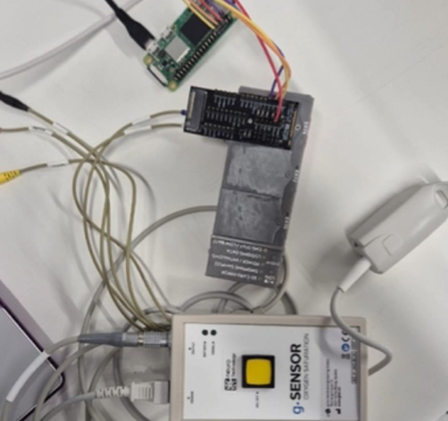

Adaptive XR · Systems prototype · 2025–26
Adaptive XR: From Exposure Therapy to Restorative Environments
A Phase 1 closed-loop VR system linking PPG, Lab Streaming Layer, and Unity to adapt a virtual spider’s distance, with a natural-scene testbed for future restorative XR.
Video preview hosted on Google Drive ↗
Role
System design · Unity HDRP · adaptive control
Input
Custom PPG streamed through Lab Streaming Layer
Output
Real-time spider distance and bounded exposure intensity
Supervisor
Status
Phase 1 proof-of-concept · not a clinical study
01Overview
Adaptive XR treats the virtual environment as a closed loop: physiological signals are streamed into the runtime, converted into an interpretable state proxy, and used to adjust the scene while semantic events are logged for later analysis.
This project begins with a controlled spider exposure sandbox as a Phase 1 engineering testbed. It establishes the infrastructure before intelligence: stable rendering, synchronized sensing, and participant-controllable adaptation, rather than evidence of therapeutic efficacy.

02System architecture
The prototype connects three subsystems: a high-fidelity Unity HDRP environment, a real-time custom PPG pipeline streamed through Lab Streaming Layer, and an adaptive control engine that maps a heart-rate proxy to stimulus parameters.
The resulting loop is explicit and auditable: PPG stream → online heart-rate estimate → normalized control variable → spider distance → semantic event log. Keeping these stages visible makes it possible to reason about timing, reliability, and user control.
03Adaptive control
The spider’s target distance is controlled through an interpretable, bounded mapping from the heart-rate proxy. Lower-arousal proxy values allow the spider to approach, while higher values trigger a protective retreat. The controller smooths and clamps the signal so that adaptation remains continuous rather than jump-like.
Key interaction safeguards include a stable minimum and maximum intensity, continuous NavMesh movement, and participant controls for pausing, overriding, or leaving the scenario. The heart-rate proxy is used to test responsiveness, not as a complete inference of fear or emotion.

04Engineering validation
The Phase 1 validation focused on functional feasibility: stable LSL-to-Unity streaming, continuous spider navigation without visible teleportation, and bidirectional approach–retreat behaviour under changing physiological input.
The engineering work also addressed practical failure modes such as sample-rate mismatch, peak overcounting, adaptive-threshold instability, and closed-loop latency. The result supports the claim that the system can run and adapt in real time; it does not establish clinical effectiveness.
05Adaptive Restorative XR
Alongside the spider exposure sandbox, I developed a natural-scene environment as an additional testbed for Adaptive Restorative XR. This extends the project from regulating threat intensity to exploring how adaptive environments might support calmer and more restorative states.
Natural-scene demo hosted on Google Drive ↗
The scene is not presented as a validated restorative intervention. It is a forward-looking environment for testing how multimodal physiological input could modulate lighting, atmosphere, and other environmental cues in real time.
06Limitations and future work
The current prototype relies on a lightweight peak-detection method for the PPG signal, so BPM estimates remain vulnerable to motion artefacts and changes in sensor contact. A transient error in the physiological input can therefore lead to a momentary mismatch between the participant’s state and the virtual response.
Because the interaction maps heart rate to exposure intensity through a single physiological dimension, it does not account for user-specific baseline differences, recovery patterns, or system latency. The spider’s behaviour should be read as a bounded response to one noisy signal, not as a complete representation of the participant’s complex emotional state.
Future work will combine PPG with GSR/EDA and ear-EEG, add personalized calibration and low-latency streaming inference, and improve robustness to motion artefacts through learned denoising. The natural-scene testbed provides a second environment in which to explore these multimodal, restorative adaptations.
07Tech Stack
Development
Python, C# for Unity integration, PowerShell, and Windows command-line launch scripts
Physiology
Custom PPG streaming, online heart-rate estimation, Lab Streaming Layer, and synchronized semantic event logging
XR / control
Unity HDRP, AI Navigation / NavMesh, interpretable adaptive control, bounded intensity changes, and participant controls
Future direction
Multimodal PPG, GSR/EDA, ear-EEG, personalized state modelling, and low-latency streaming inference